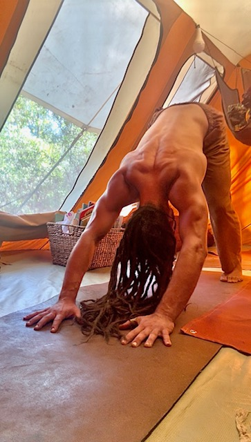
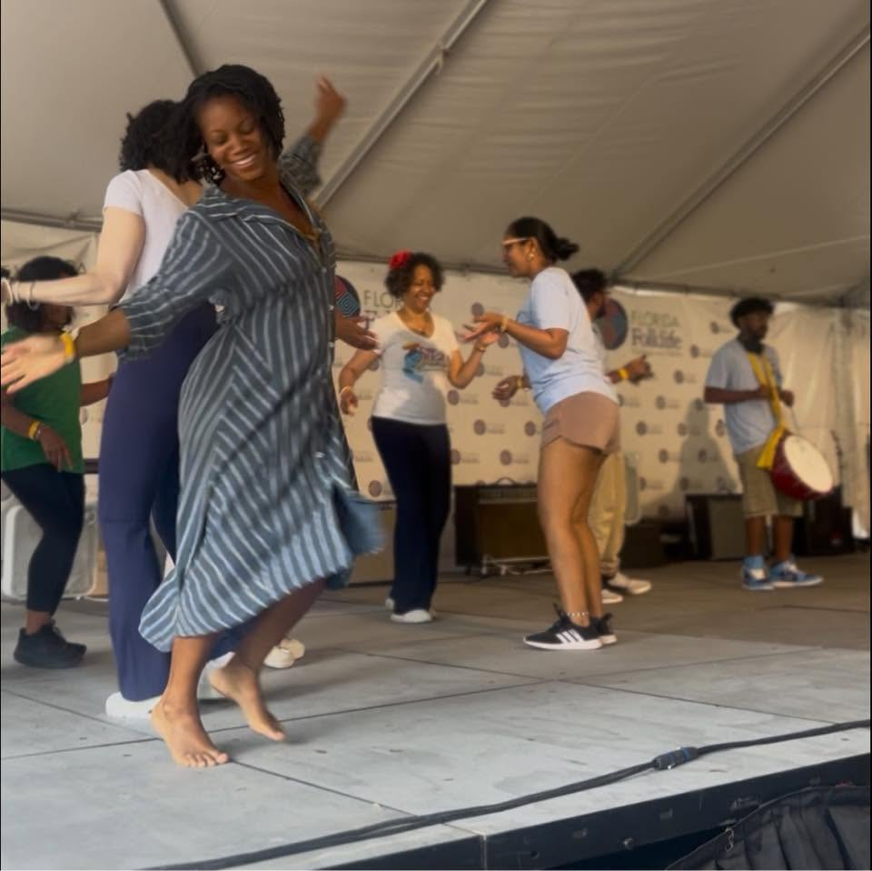

About
Together we have supported each other, learned from each other's passions and unique qualities, and joined forces to not only cultivate our own vitality and wellness as a family but to support you as well.

Lev is a family man, vitality artist, natural movement trainer, transformational bodyworker, nourishment innovator, and co-creator of Journey Home Vitals. His path towards embodying wellness-based life was shaped early by childhood injuries, exposure to energetic healing, and formative experiences immersed in Nature, and growing and foraging his own food. From those early experiences Lev learned experientially as well as academically from diverse teachers and methods of healing such as massage therapy from Potomac Massage Training Institute, True Body Intelligence from Isaiah Fleissbach and Christopher Mayer, Indigenous African Healing from Traditional Healers of The Earth Center, Thai bodywork from Francisco Morales-Bermudez, and Capoeira Angola from Mestre Cobra Mansa, all of which inform his multifaceted healing practice. Professionally, Lev has worked in top-rated wellness spaces such as Zen and the City (Baltimore, MD), EarthFit Gym (Beaufort, SC), Synergy Yoga Retreats, and operated his own mobile massage and movement practice. He has helped hundreds of individuals recover from injuries, relieve chronic pain, and embody greater vitality through bodywork, energy healing, and natural movement. Fluent in five languages and continuously learning new ones, Lev is passionate about connecting with people of diverse cultures and walks of life, and the sacred relationships between the body, food, movement, healing, and nature, continuously learning from indigenous cultural wisdom to be able to experience a deeper sense of home on this Earth.

Ife has been on the path of seeking ways to support wellness from within out since she realized how deeply our stories affect our experience of reality, in learning about the placebo effect in her first college program over 20 years ago. This realization was seeded by her family's yearly practice of Kwanzaa and the reflection of the Nguzo Saba, or 7 principles, throughout her childhood. Her academic achievements include a master's degree in Transpersonal Psychology with emphases in Women's Spirituality and Creative Innovation from Sofia University, and a magna cum laude bachelor's in Media and Communication with emphases in Film and Sustainability from Maharishi International University. Through these studies and many self-directed others, she has discovered a life path of amplifying wellness that she celebrates in sharing.
At the deepest level
It's something we anchor into by default, simply by the choice we always have to align with nurturing wellness. It's the breath we take as if smelling something we love, and the mindset to use words that amplify our wellness instead of negating it.
It's our sense that our wellness impacts others and is impacted by others, and that we are fundamentally connected to everything around us. It's recognizing that we need to engage that connection consciously, and sometimes create healthy boundaries, so that we can amplify wellness and systematize it to the point where we can impact others' wellness effectively and support them when they are ready.
This is where we acknowledge that we all get to choose how, and if, we want to nurture our wellness. And as we become more effective at nurturing wellness in any situations — ones we know and even in those we don't know and are only preparing for blindly — we realize within our preparations we are nurturing more and more of our sovereign capacity to choose.
Fundamentally, we believe this w.i.s.dom is not just something we came to; it is the qualities of nature itself, and it became our faith when we truly anchored into how life implicates these qualities. To go deeper into that faith-based work, we have a fellowship foundation that you can learn more about at wellspringsofumoja.site.